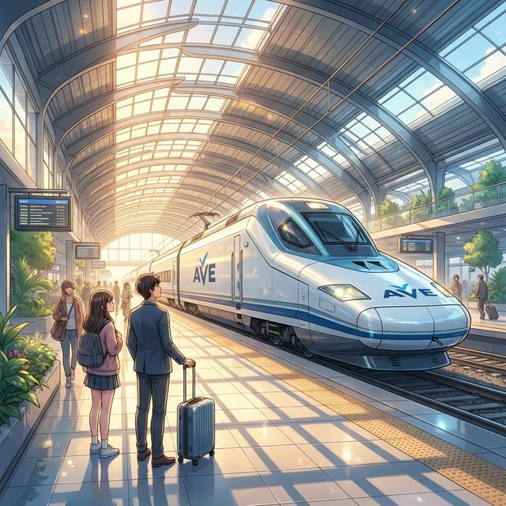

Cervantes: §10 여행, 숙박 및 §12 지리 및 장소
¡Buen viaje! (즐거운 여행 되세요!)
새로운 곳으로 떠나는 설렘은 누구에게나 특별합니다. 스페인어로 길을 묻고, 기차표를 사고, 가고 싶은 장소를 말할 수 있다면 여러분의 여행은 훨씬 더 풍요로워질 것입니다. 이번 장에서는 공항, 기차역, 호텔에서 쓰이는 필수 여행 어휘와 함께, '가다'라는 뜻의 동사 'ir'를 활용해 미래의 계획을 말하는 법을 배웁니다. 또한 세계적인 수준을 자랑하는 스페인의 대중교통 문화와 아름다운 도시들의 특징도 함께 살펴볼까요?
학습 목표
- 교통수단, 여행지 및 장소 어휘 15개 이상 습득
- 'ir(가다)' 동사의 현재형 시제 변화와 'ir a + 동사원형' (미래 계획) 표현
- 방향을 나타내는 전치사와 장소 묻기 (¿Dónde está...?)
- 스페인의 고속열차 AVE와 기차 여행 문화 이해
여행을 떠날 때 꼭 필요한 물건들과 교통수단입니다. 번호와 매칭되는 단어를 확인하며 필수 어휘들을 익혀보세요.
| # | Spanish | English Bridge | Korean Tip |
|---|---|---|---|
| 1 | el avión | Aviation (related) | 비행기 |
| 2 | el tren | Train ✅ | 기차 |
| 3 | el autobús / el bus | Bus ✅ | 버스 |
| 4 | el coche | Coach (related) | 자동차 |
| 5 | la maleta | — | 가방 / 트렁크 |
| 6 | el pasaporte | Passport ✅ (Perfect Cognate) | 여권 |
| 7 | el mapa | Map ✅ | 지도 |
| 8 | el billete | Bill (related/ticket) | 표 / 티켓 |
| 9 | la estación | Station ✅ | 역 |
| 10 | el aeropuerto | Airport ✅ | 공항 |
✅ 표시된 단어는 영어와 어원의 뿌리가 같은 'Cognates'입니다.
여행지에서 바로 사용할 수 있는 실전 문장들입니다.
A. 길 찾기 및 위치 묻기
- ¿Dónde está la estación de tren? (Where is the train station? / 기차역이 어디에 있나요?)
- Perdone, ¿hay un banco cerca? (Excuse me, is there a bank nearby? / 실례합니다, 근처에 은행이 있나요?)
- Está a la derecha / a la izquierda. (It is on the right / on the left. / 오른쪽에 / 왼쪽에 있어요.)
- Todo recto. (Straight ahead. / 쭉 직진하세요.)
B. 티켓 구매 및 이동
- Un billete para Madrid, por favor. (A ticket for Madrid, please. / 마드리드행 표 한 장 주세요.)
- ¿A qué hora sale el próximo tren? (What time does the next train leave? / 다음 기차가 몇 시에 출발하나요?)
- Voy en avión a Barcelona. (I go by plane to Barcelona. / 비행기를 타고 바르셀로나에 가요.)
- Quiero ir al museo. (I want to go to the museum. / 박물관에 가고 싶어요.)
이동의 핵심인 'Ir' 동사와 미래 계획을 세우는 법을 익혀봅시다.
'Ir'는 매우 자주 쓰이지만 변화가 독특하니 꼭 암기해야 합니다.
| 인칭 | Ir | 영어 매핑 (to go) |
| :--- | :--- | :--- |
| Yo | voy | I go |
| Tú | vas | You go |
| Él/Ella/Ud. | va | He/She/You go |
| Nosotros/as | vamos | We go |
| Vosotros/as | vais | You all go |
| Ellos/Ellas/Uds. | van | They/You all go |
영어의 be going to와 똑같은 구조로, 미래의 계획을 나타냅니다.
- Voy a viajar a España. (나는 스페인으로 여행 갈 것이다.)
- ¿Qué vas a hacer mañana? (너는 내일 무엇을 할 거니?)
- Vamos a comer paella. (우리는 빠에야를 먹을 거야.)
Korean Tip!
장소 앞에 오는 전치사 a와 정관사 el이 만나면 al이 됩니다. (a + el = al)
예: Voy al cine. (나는 영화관에 간다.)
스페인에서 이동하는 가장 스마트한 방법은 무엇일까요?

El sistema de transporte en España es excelente. El AVE (Alta Velocidad Española) conecta las principales ciudades como Madrid, Sevilla, Valencia y Barcelona de forma rápida y cómoda. Las estaciones suelen ser edificios históricos o modernos muy bonitos, como la estación de Atocha en Madrid, que tiene un jardín tropical en su interior.
Dentro de las ciudades, el metro es la mejor opción. El Metro de Madrid y el de Barcelona son limpios, rápidos y fáciles de usar. Para los viajes más cortos entre pueblos, el autobús es muy popular y económico. Los españoles prefieren el transporte público porque es eficiente y permite disfrutar de las vistas sin el estrés de conducir.
[한국어 번역]
스페인의 교통 시스템은 훌륭합니다. 고속열차인 AVE(아베)는 마드리드, 세비야, 발렌시아, 바르셀로나 같은 주요 도시들을 빠르고 편안하게 연결합니다. 기차역들은 대개 유서 깊거나 매우 아름다운 현대식 건물인데, 마드리드의 아토차(Atocha) 역은 내부에 열대 정원이 있는 것으로 유명합니다.
도시 내부에서는 메트로(지하철)가 최선의 선택입니다. 마드리드와 바르셀로나의 메트로는 깨끗하고 빠르며 사용하기 쉽습니다. 마을 사이의 짧은 여행에는 버스가 매우 대중적이고 경제적입니다. 스페인 사람들은 효율적이고 운전의 스트레스 없이 풍경을 즐길 수 있기 때문에 대중교통을 선호합니다.
A. Match the transport with the place (교통수단과 어울리는 장소를 연결하세요)
| 좌측 (교통수단) | 우측 (장소) |
|---|---|
| 1. El avión | a. La carretera (도로) |
| 2. El tren | b. El aeropuerto (공항) |
| 3. El barco (배) | c. La vía (철로) |
| 4. El coche | d. El puerto (항구) |
B. Ir 동사 변형 및 미래 표현 연습 (괄호 안의 주어에 맞게 완성하세요)
C. 번역 연습 (주어진 문장을 스페인어로 번역하세요)
Mis vacaciones en Andalucía (안달루시아에서의 나의 휴가)
Este verano voy a viajar a Andalucía, en el sur de España. Primero, voy a tomar un avión de Seúl a Madrid. Después, voy a ir en el tren AVE a Sevilla. ¡Me han dicho que el tren es muy rápido! En Sevilla, voy a visitar la Catedral y voy a pasear por el barrio de Santa Cruz. El mapa de mi móvil es muy útil para no perderme. También quiero ir a Granada para ver la Alhambra. Voy a ir en autobús porque es más barato. Mi maleta no es muy grande, pero tengo muchas ganas de ir. ¡Va a ser un viaje fantástico!
Questions:
1. 주인공은 마드리드에서 세비야까지 어떻게 가나요? (How does the protagonist go from Madrid to Seville?)
- ............................................................
2. 주인공은 왜 그라나다에 버스를 타고 가려고 하나요? (Why does the protagonist want to go to Granada by bus?)
- ............................................................
[한국어 번역]
이번 여름에 저는 스페인 남부의 안달루시아로 여행을 갈 거예요. 먼저, 서울에서 마드리드로 가는 비행기를 탈 것입니다. 그 후, AVE 기차를 타고 세비야로 갈 거예요. 기차가 정말 빠르다고 들었거든요! 세비야에서는 대성당을 방문하고 산타 크루스 지구를 산책할 예정입니다. 휴대폰 지도가 길을 잃지 않는 데 매우 유용합니다. 또한 알함브라 궁전을 보기 위해 그라나다에도 가고 싶어요. 버스가 더 저렴하기 때문에 버스로 갈 것입니다. 제 가방은 아주 크지 않지만, 가고 싶은 마음은 굴뚝같습니다. 환상적인 여행이 될 거예요!
En la taquilla (매표소에서)
Situación: Un turista compra un billete de tren para ir a Valencia.
상황: 한 관광객이 발렌시아로 가기 위해 기차표를 삽니다.
| Spanish | Korean |
|---|---|
| Turista: Hola, buenos días. Un billete para Valencia, por favor. | 관광객: 안녕하세요. 발렌시아행 표 한 장 주세요. |
| Empleado: ¿Para hoy? | 직원: 오늘 가시나요? |
| Turista: Sí, para el próximo tren. | 관광객: 네, 다음 기차로요. |
| Empleado: El próximo tren sale a las once y media. | 직원: 다음 기차는 11시 반에 출발합니다. |
| Turista: Perfecto. ¿Cuánto cuesta? | 관광객: 좋아요. 얼마인가요? |
| Empleado: Son 45 euros. | 직원: 45유로입니다. |
| Turista: Aquí tiene. ¿De qué vía sale? | 관광객: 여기 있습니다. 몇 번 플랫폼(철로)에서 출발하나요? |
| Empleado: Sale de la vía número 4. | 직원: 4번 플랫폼에서 출발합니다. |
이번 장의 핵심 내용을 복습해 보세요.
- [ ] 여행 및 교통과 관련된 단어 10개 이상을 알고 있나요?
- [ ] 'Ir' 동사의 6가지 변화를 완벽하게 외웠나요?
- [ ] 'Ir a + 동사원형'으로 미래 계획을 말할 수 있나요?
- [ ] 스페인의 고속열차 AVE와 기차역 문화에 대해 이해했나요?
¡Buen viaje con tu español! 오늘 여러분은 새로운 세상을 만나는 통로인 '여행'에 대해 배웠습니다. 'Ir' 동사 하나만으로도 여러분은 현재 어디로 가는지, 그리고 앞으로 무엇을 할 것인지 멋지게 표현할 수 있게 되었습니다. 언어는 그 자체로 하나의 여행입니다. 다음 장에서는 목적지에 도착해 그곳의 정취를 더 깊이 느낄 수 있는 '여행 심화, 호텔 예약 및 관광(A2)' 섹션으로 이어가겠습니다. ¡Hasta la próxima parada!
6. Práctica - A. Match the transport with the place
1-b / 2-c / 3-d / 4-a
6. Práctica - B. Ir 동사 변형 및 미래 표현 연습
1. voy / 2. vas / 3. va / 4. vamos / 5. van
6. Práctica - C. 번역 연습
1. ¿Dónde está la estación de metro?
2. Voy al aeropuerto.
3. ¿Qué vas a hacer mañana?
4. Vamos a ir al museo.
5. Un billete de avión, por favor.
7. Lectura Questions
1. AVE 기차 (En el tren AVE).
2. 더 저렴하기 때문에 (Porque es más barato).